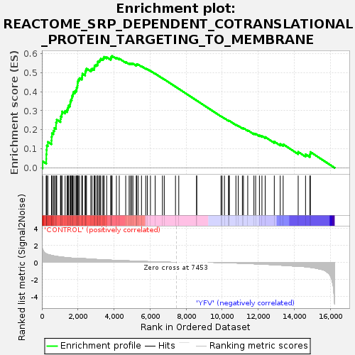
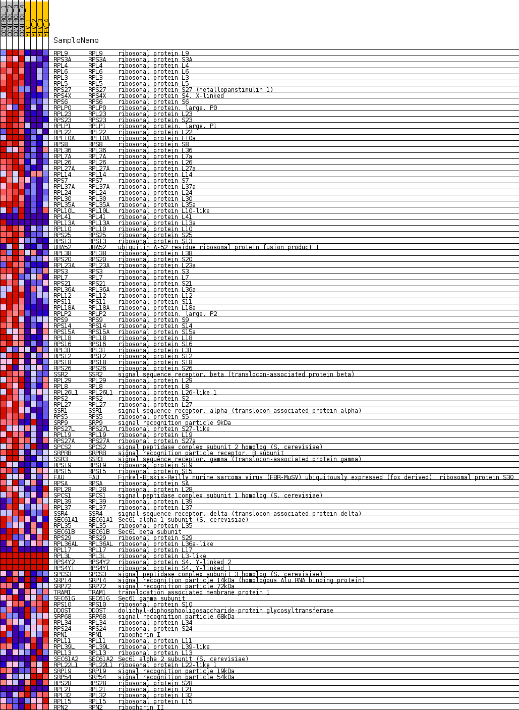
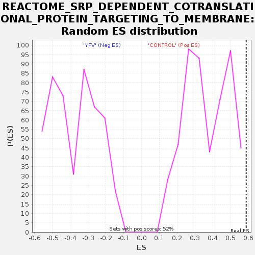

| Dataset | MATRIZ_GSE99081_collapsed_to_symbols.gsea_CLASE_99081.cls#CONTROL_versus_YFV |
| Phenotype | gsea_CLASE_99081.cls#CONTROL_versus_YFV |
| Upregulated in class | CONTROL |
| GeneSet | REACTOME_SRP_DEPENDENT_COTRANSLATIONAL_PROTEIN_TARGETING_TO_MEMBRANE |
| Enrichment Score (ES) | 0.58742625 |
| Normalized Enrichment Score (NES) | 1.5884683 |
| Nominal p-value | 0.0 |
| FDR q-value | 0.89694834 |
| FWER p-Value | 0.953 |

| SYMBOL | TITLE | RANK IN GENE LIST | RANK METRIC SCORE | RUNNING ES | CORE ENRICHMENT | |
|---|---|---|---|---|---|---|
| 1 | RPL9 | ribosomal protein L9 | 39 | 1.536 | 0.0349 | Yes |
| 2 | RPS3A | ribosomal protein S3A | 243 | 1.002 | 0.0467 | Yes |
| 3 | RPL4 | ribosomal protein L4 | 245 | 1.000 | 0.0709 | Yes |
| 4 | RPL6 | ribosomal protein L6 | 258 | 0.994 | 0.0943 | Yes |
| 5 | RPL3 | ribosomal protein L3 | 271 | 0.979 | 0.1174 | Yes |
| 6 | RPL5 | ribosomal protein L5 | 331 | 0.928 | 0.1363 | Yes |
| 7 | RPS27 | ribosomal protein S27 (metallopanstimulin 1) | 531 | 0.815 | 0.1437 | Yes |
| 8 | RPS4X | ribosomal protein S4, X-linked | 540 | 0.811 | 0.1629 | Yes |
| 9 | RPS6 | ribosomal protein S6 | 556 | 0.801 | 0.1815 | Yes |
| 10 | RPLP0 | ribosomal protein, large, P0 | 638 | 0.765 | 0.1950 | Yes |
| 11 | RPL23 | ribosomal protein L23 | 694 | 0.744 | 0.2097 | Yes |
| 12 | RPS23 | ribosomal protein S23 | 783 | 0.708 | 0.2214 | Yes |
| 13 | RPLP1 | ribosomal protein, large, P1 | 785 | 0.707 | 0.2386 | Yes |
| 14 | RPL22 | ribosomal protein L22 | 823 | 0.695 | 0.2532 | Yes |
| 15 | RPL10A | ribosomal protein L10a | 1031 | 0.636 | 0.2558 | Yes |
| 16 | RPS8 | ribosomal protein S8 | 1045 | 0.631 | 0.2703 | Yes |
| 17 | RPL36 | ribosomal protein L36 | 1103 | 0.618 | 0.2818 | Yes |
| 18 | RPL7A | ribosomal protein L7a | 1114 | 0.617 | 0.2962 | Yes |
| 19 | RPL26 | ribosomal protein L26 | 1288 | 0.575 | 0.2994 | Yes |
| 20 | RPL27A | ribosomal protein L27a | 1398 | 0.551 | 0.3060 | Yes |
| 21 | RPL14 | ribosomal protein L14 | 1446 | 0.539 | 0.3162 | Yes |
| 22 | RPS7 | ribosomal protein S7 | 1477 | 0.534 | 0.3273 | Yes |
| 23 | RPL37A | ribosomal protein L37a | 1562 | 0.517 | 0.3347 | Yes |
| 24 | RPL24 | ribosomal protein L24 | 1574 | 0.514 | 0.3465 | Yes |
| 25 | RPL30 | ribosomal protein L30 | 1608 | 0.507 | 0.3568 | Yes |
| 26 | RPL35A | ribosomal protein L35a | 1658 | 0.502 | 0.3660 | Yes |
| 27 | RPL10L | ribosomal protein L10-like | 1670 | 0.501 | 0.3774 | Yes |
| 28 | RPL41 | ribosomal protein L41 | 1720 | 0.500 | 0.3866 | Yes |
| 29 | RPL13A | ribosomal protein L13a | 1740 | 0.500 | 0.3975 | Yes |
| 30 | RPL10 | ribosomal protein L10 | 1836 | 0.500 | 0.4038 | Yes |
| 31 | RPS25 | ribosomal protein S25 | 1908 | 0.495 | 0.4114 | Yes |
| 32 | RPS13 | ribosomal protein S13 | 1927 | 0.494 | 0.4223 | Yes |
| 33 | UBA52 | ubiquitin A-52 residue ribosomal protein fusion product 1 | 1969 | 0.488 | 0.4316 | Yes |
| 34 | RPL38 | ribosomal protein L38 | 1981 | 0.487 | 0.4428 | Yes |
| 35 | RPS20 | ribosomal protein S20 | 1985 | 0.486 | 0.4544 | Yes |
| 36 | RPL23A | ribosomal protein L23a | 2018 | 0.480 | 0.4641 | Yes |
| 37 | RPS3 | ribosomal protein S3 | 2085 | 0.470 | 0.4714 | Yes |
| 38 | RPL7 | ribosomal protein L7 | 2215 | 0.454 | 0.4744 | Yes |
| 39 | RPS21 | ribosomal protein S21 | 2236 | 0.450 | 0.4841 | Yes |
| 40 | RPL36A | ribosomal protein L36a | 2245 | 0.449 | 0.4946 | Yes |
| 41 | RPL12 | ribosomal protein L12 | 2400 | 0.425 | 0.4953 | Yes |
| 42 | RPS11 | ribosomal protein S11 | 2405 | 0.425 | 0.5054 | Yes |
| 43 | RPL18A | ribosomal protein L18a | 2439 | 0.421 | 0.5136 | Yes |
| 44 | RPLP2 | ribosomal protein, large, P2 | 2474 | 0.416 | 0.5216 | Yes |
| 45 | RPS9 | ribosomal protein S9 | 2713 | 0.381 | 0.5161 | Yes |
| 46 | RPS14 | ribosomal protein S14 | 2782 | 0.370 | 0.5209 | Yes |
| 47 | RPS15A | ribosomal protein S15a | 2897 | 0.353 | 0.5224 | Yes |
| 48 | RPL18 | ribosomal protein L18 | 2912 | 0.352 | 0.5301 | Yes |
| 49 | RPS16 | ribosomal protein S16 | 2921 | 0.351 | 0.5381 | Yes |
| 50 | RPL31 | ribosomal protein L31 | 2998 | 0.343 | 0.5417 | Yes |
| 51 | RPS12 | ribosomal protein S12 | 3083 | 0.334 | 0.5446 | Yes |
| 52 | RPS18 | ribosomal protein S18 | 3094 | 0.332 | 0.5521 | Yes |
| 53 | RPS26 | ribosomal protein S26 | 3104 | 0.332 | 0.5596 | Yes |
| 54 | SSR2 | signal sequence receptor, beta (translocon-associated protein beta) | 3187 | 0.322 | 0.5623 | Yes |
| 55 | RPL29 | ribosomal protein L29 | 3224 | 0.317 | 0.5678 | Yes |
| 56 | RPL8 | ribosomal protein L8 | 3265 | 0.313 | 0.5729 | Yes |
| 57 | RPL26L1 | ribosomal protein L26-like 1 | 3380 | 0.301 | 0.5732 | Yes |
| 58 | RPS2 | ribosomal protein S2 | 3429 | 0.296 | 0.5774 | Yes |
| 59 | RPL27 | ribosomal protein L27 | 3451 | 0.294 | 0.5832 | Yes |
| 60 | SSR1 | signal sequence receptor, alpha (translocon-associated protein alpha) | 3593 | 0.279 | 0.5812 | Yes |
| 61 | RPS5 | ribosomal protein S5 | 3819 | 0.257 | 0.5735 | Yes |
| 62 | SRP9 | signal recognition particle 9kDa | 3840 | 0.255 | 0.5785 | Yes |
| 63 | RPS27L | ribosomal protein S27-like | 3849 | 0.254 | 0.5842 | Yes |
| 64 | RPL19 | ribosomal protein L19 | 3896 | 0.251 | 0.5874 | Yes |
| 65 | RPS27A | ribosomal protein S27a | 4134 | 0.232 | 0.5784 | No |
| 66 | SPCS2 | signal peptidase complex subunit 2 homolog (S. cerevisiae) | 4291 | 0.220 | 0.5740 | No |
| 67 | SRPRB | signal recognition particle receptor, B subunit | 4649 | 0.188 | 0.5565 | No |
| 68 | SSR3 | signal sequence receptor, gamma (translocon-associated protein gamma) | 4839 | 0.171 | 0.5489 | No |
| 69 | RPS19 | ribosomal protein S19 | 4912 | 0.165 | 0.5485 | No |
| 70 | RPS15 | ribosomal protein S15 | 4986 | 0.160 | 0.5478 | No |
| 71 | FAU | Finkel-Biskis-Reilly murine sarcoma virus (FBR-MuSV) ubiquitously expressed (fox derived); ribosomal protein S30 | 5050 | 0.154 | 0.5477 | No |
| 72 | RPSA | ribosomal protein SA | 5235 | 0.135 | 0.5395 | No |
| 73 | RPL28 | ribosomal protein L28 | 5254 | 0.133 | 0.5417 | No |
| 74 | SPCS1 | signal peptidase complex subunit 1 homolog (S. cerevisiae) | 5258 | 0.133 | 0.5447 | No |
| 75 | RPL39 | ribosomal protein L39 | 5334 | 0.127 | 0.5432 | No |
| 76 | RPL37 | ribosomal protein L37 | 5525 | 0.111 | 0.5341 | No |
| 77 | SSR4 | signal sequence receptor, delta (translocon-associated protein delta) | 5759 | 0.093 | 0.5219 | No |
| 78 | SEC61A1 | Sec61 alpha 1 subunit (S. cerevisiae) | 5847 | 0.088 | 0.5186 | No |
| 79 | RPL35 | ribosomal protein L35 | 6021 | 0.074 | 0.5097 | No |
| 80 | SEC61B | Sec61 beta subunit | 6283 | 0.054 | 0.4949 | No |
| 81 | RPS29 | ribosomal protein S29 | 6686 | 0.027 | 0.4706 | No |
| 82 | RPL36AL | ribosomal protein L36a-like | 6788 | 0.022 | 0.4649 | No |
| 83 | RPL17 | ribosomal protein L17 | 7410 | 0.000 | 0.4264 | No |
| 84 | RPL3L | ribosomal protein L3-like | 7592 | 0.000 | 0.4151 | No |
| 85 | RPS4Y2 | ribosomal protein S4, Y-linked 2 | 8583 | 0.000 | 0.3538 | No |
| 86 | RPS4Y1 | ribosomal protein S4, Y-linked 1 | 8584 | 0.000 | 0.3538 | No |
| 87 | SPCS3 | signal peptidase complex subunit 3 homolog (S. cerevisiae) | 9934 | -0.022 | 0.2707 | No |
| 88 | SRP14 | signal recognition particle 14kDa (homologous Alu RNA binding protein) | 9994 | -0.025 | 0.2676 | No |
| 89 | SRP72 | signal recognition particle 72kDa | 10126 | -0.032 | 0.2603 | No |
| 90 | TRAM1 | translocation associated membrane protein 1 | 10350 | -0.048 | 0.2476 | No |
| 91 | SEC61G | Sec61 gamma subunit | 10387 | -0.050 | 0.2466 | No |
| 92 | RPS10 | ribosomal protein S10 | 10390 | -0.051 | 0.2477 | No |
| 93 | DDOST | dolichyl-diphosphooligosaccharide-protein glycosyltransferase | 10761 | -0.081 | 0.2267 | No |
| 94 | SRP68 | signal recognition particle 68kDa | 10890 | -0.092 | 0.2210 | No |
| 95 | RPL34 | ribosomal protein L34 | 11119 | -0.112 | 0.2096 | No |
| 96 | RPS24 | ribosomal protein S24 | 11178 | -0.118 | 0.2089 | No |
| 97 | RPN1 | ribophorin I | 11417 | -0.141 | 0.1976 | No |
| 98 | RPL11 | ribosomal protein L11 | 11759 | -0.170 | 0.1806 | No |
| 99 | RPL39L | ribosomal protein L39-like | 11855 | -0.179 | 0.1790 | No |
| 100 | RPL13 | ribosomal protein L13 | 12065 | -0.199 | 0.1709 | No |
| 101 | SEC61A2 | Sec61 alpha 2 subunit (S. cerevisiae) | 12205 | -0.214 | 0.1675 | No |
| 102 | RPL22L1 | ribosomal protein L22-like 1 | 12387 | -0.232 | 0.1619 | No |
| 103 | SRP19 | signal recognition particle 19kDa | 12890 | -0.287 | 0.1378 | No |
| 104 | SRP54 | signal recognition particle 54kDa | 13218 | -0.330 | 0.1255 | No |
| 105 | RPS28 | ribosomal protein S28 | 13382 | -0.348 | 0.1239 | No |
| 106 | RPL21 | ribosomal protein L21 | 14215 | -0.485 | 0.0841 | No |
| 107 | RPL32 | ribosomal protein L32 | 14623 | -0.523 | 0.0716 | No |
| 108 | RPL15 | ribosomal protein L15 | 14863 | -0.582 | 0.0709 | No |
| 109 | RPN2 | ribophorin II | 14892 | -0.591 | 0.0835 | No |

